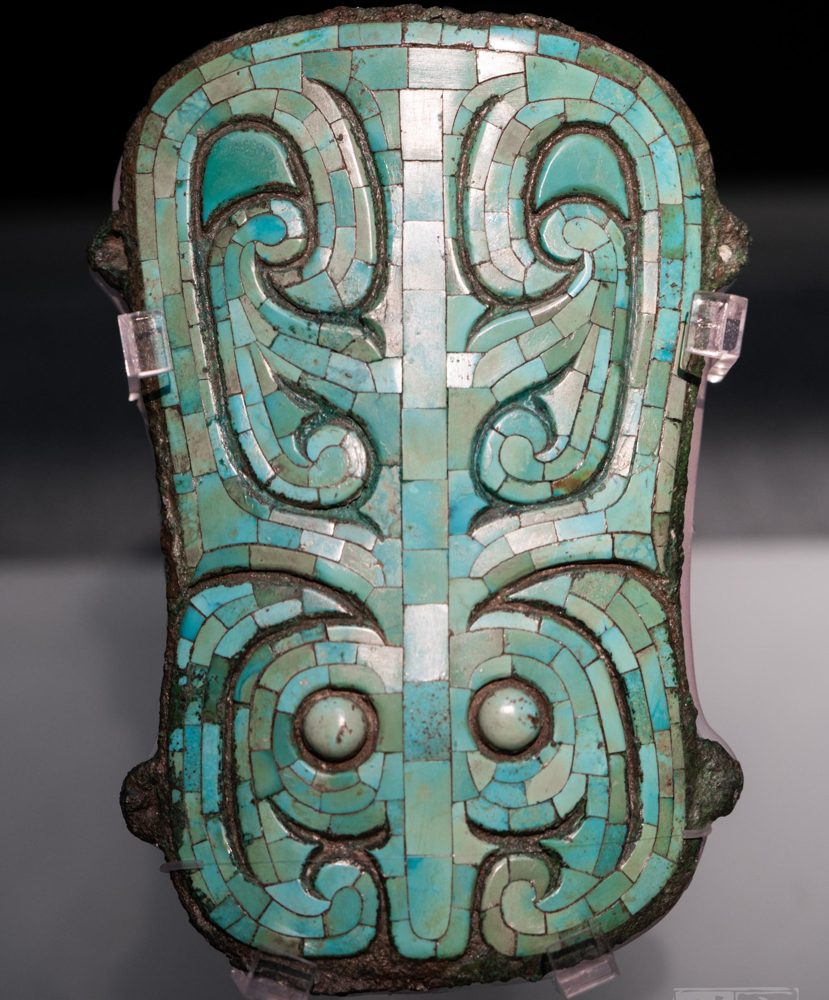
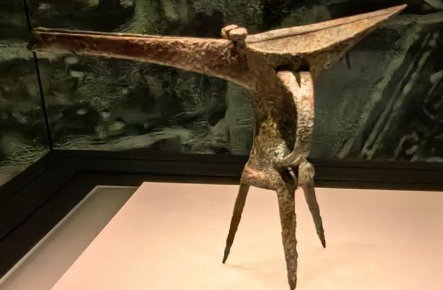

中国考古博物馆
首页
文物保护
非遗分布
文物故事

古韵今风
文明之光
建筑外形似尊的中国历史研究院，坐落在北京中轴线的北延长线上。院内的中国考古博物馆，是我国第一家以考古命名的国家级专业博物馆。
在中国考古博物馆前，拾级而上，推开铸有《千里江山图》纹样的大门，一条“历史大道”在眼前展开，它以时间轴的形式展示了我国历史发展的重要节点和重大事件，铭刻着中华大地上百万年的人类史、一万余年的文化史和五千余年的文明史。大道两侧，两辆出土于河南安阳殷墟遗址的殷商时期马车整体展出，让参观者如同置身于考古出土现场一般
7000
常设展厅7000多平方米
6000
展品6000余件，在这里公众既能读解文物所携带的信息，又能了解考古在历史研究中的作用。
文物保护
指的是对具有历史价值、文化价值、科学价值的历史遗留物采取的一系列防止其受到损害的措施，这个过程叫做文物保护。
保护文物
那些承载历史变迁的镇馆之宝
走在中国考古博物馆的中国历史大道，可以感觉到历史的厚重，它从距今八百多万年腊玛古猿算起，一步一步往前走。
玉冠饰
嵌绿松石兽面纹铜牌饰
象牙杯
文物的故事
文物的背后，是历史诉说的故事
夏绿松石龙形器
绿松石龙形器是中华民族龙图腾最直接、最正统的根源
嵌绿松石兽面纹铜牌饰
嵌绿松石象牙杯
铜爵
文物保护
文物是人类社会活动中遗留下来的具有历史、艺术、科学价值的遗物和遗迹。
第一，保护历史文化遗产：文物是人类历史文化的见证和遗存，通过保护文物，可以保护历史文化遗产，使之得以传承和延续
第二，维护文化多样性：文物不仅仅代表着一个国家或地区的历史文化，还反映了不同文化之间的交流和融合。保护文物可以维护文化多样性，促进文化交流和理解。
第三，提升国家文化软实力：文物是一个国家文化的重要组成部分，保护文物可以提升一个国家的文化软实力，增强其国际影响力和竞争力。
第四，促进旅游业发展：文物是旅游业的重要资源，保护文物可以促进旅游业的发展，为经济增长提供支持。
非遗分布
保护非遗就是在保护当代文化不要被遗忘而消逝
那些承载历史变迁的镇馆之宝
走在中国考古博物馆的中国历史大道，可以感觉到历史的厚重，它从距今八百多万年腊玛古猿算起，一步一步往前走。
玉冠饰
嵌绿松石兽面纹铜牌饰
象牙杯
岁月低语
文物背后的历史故事
夏绿松石龙形器
绿松石龙形器是中华民族龙图腾最直接、最正统的根源。
嵌绿松石兽面纹铜牌饰
掌握青铜技术的二里头贵族，实现了从氏族聚落向王权社会的过渡。
嵌绿松石象牙杯
商人服象，为虐于东夷，周公遂以师逐之，至于江南，乃为三象，以嘉其德。

铜爵
铜爵是中国青铜器中最具代表性的酒礼器，可以说是中国酒文化的代表